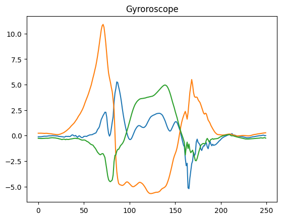
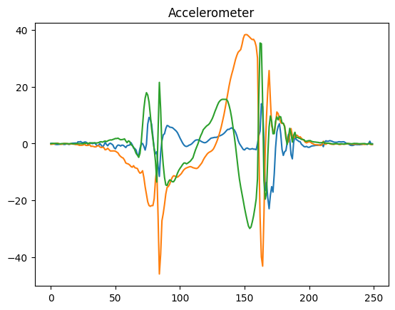
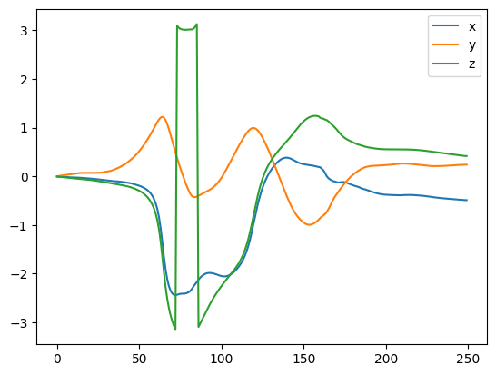

Madwick filter
example of a Madwick filter for computing the orientation of a 6 axis IMU (acceleration, gyroscope) using the ahrs library.
Import
[4]:
from ahrs.filters import Madgwick
import numpy as np
import pandas as pd
import matplotlib.pyplot as plt
from ahrs import Quaternion
Load the data and clean
[5]:
df = pd.read_csv(r"./../../data/NONAN_Gaitprint/S001/S001/S001_1_cycle.csv")
[6]:
acc_col = [
'Noraxon MyoMotion-Segments-Foot RT-Acceleration-x (mG)',
'Noraxon MyoMotion-Segments-Foot RT-Acceleration-y (mG)',
'Noraxon MyoMotion-Segments-Foot RT-Acceleration-z (mG)'
]
gyr_col = [
'Noraxon MyoMotion-Segments-Foot RT-Gyroscope-x (deg/s)',
'Noraxon MyoMotion-Segments-Foot RT-Gyroscope-y (deg/s)',
'Noraxon MyoMotion-Segments-Foot RT-Gyroscope-z (deg/s)'
]
[7]:
gyro_data = np.deg2rad(df[gyr_col].to_numpy())
acc_data = df[acc_col].to_numpy()*9.81/1000
time = df['time'].to_numpy()
fs = len(time)/time[-1] - time[0]
Diplay the gyroscope and acceleation data
[12]:
plt.figure()
plt.title("Gyroroscope")
plt.plot(gyro_data)
plt.show()
plt.figure()
plt.title("Accelerometer")
plt.plot(acc_data)
plt.show()


Computation the orientation
when calling the Madwock function, the quaternion are computed, we can then transform the quaternion in a more understandle signal: euler angles
[9]:
madgwick = Madgwick(gyr=gyro_data, acc=acc_data, frequency=fs,
gain= 0.09, q0=[1,0,0,0])
Euler angle transformation
[10]:
euler = np.zeros((len(madgwick.Q), 3))
for i, q in enumerate(madgwick.Q):
euler[i,:] = Quaternion(q).to_angles()
[11]:
plt.figure()
plt.plot(euler[:,0], label="x")
plt.plot(euler[:,1], label="y")
plt.plot(euler[:,2], label="z")
plt.legend()
plt.show()
print("end")

end
The angles around x and y seems not very accurate (knowlegde based), we could optimise the results by playing with the the parameter of Madwick (gain) and/or split the init and the update pahse of madwick to more accurately set the gain.
On Z, a gimbal lock efect can be seen